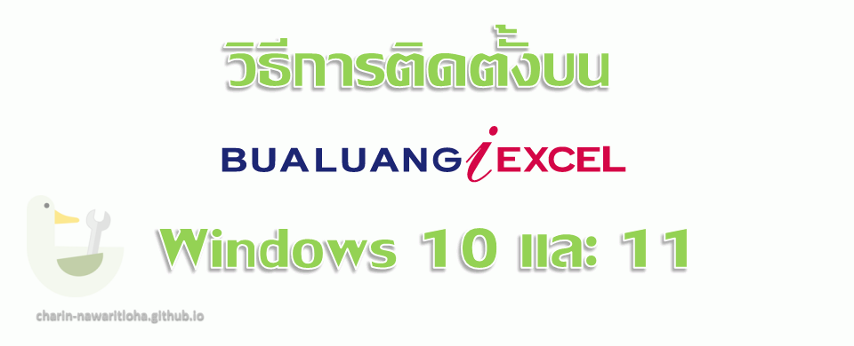

วิธีการติดตั้ง Bualuang iExcel บน Windows 10 และ 11

โปรแกรม iExcel เป็นเครื่องมือที่ทาง "หลักทรัพย์บัวหลวง" ให้บริการฟรีกับสมาชิก (ต้องใช้ Username และ password เพื่อใช้งาน) แต่ข้อมูลและคู่มือวิธีการใช้งานค่อนข้างเก่า และมีปัญหากับ Windows 10 ผมต้องไล่หาข้อมูลเก่า ๆ ของทางบัวหลวงเอง และมาสรุปไว้เผื่อคนอื่นเจอปัญหาแบบเดียวกัน
เว็บเพจเก่าที่มีข้อมูลอ้างอิง เมื่อเข้าไปแล้วจะพบปัญหาใบรับรอง HTTPS ถ้าจะดูต้องกดผ่านเข้าไปดูเอง
https://itrading2.bualuang.co.th/BualuangiExcel
การติดตั้ง iExcel
แน่ใจว่า Uninstall ตัว BLSConnector รุ่นก่อนหน้าออกก่อนให้เรียบร้อย (ถ้าไม่เคยติดตั้งให้ข้ามขั้นตอนนี้ไป)
หน้าดาวน์โหลดปัจจุบันที่ผมหาพบ https://www.bualuang.co.th/iexcel
จากนั้นให้ดาวน์โหลดรุ่นล่าสุด ซึ่งขณะที่เขียนเป็นเวอร์ชั่น 5.0.2
ถ้าใช้ MS Office เป็น 32bits ให้ดาวน์โหลดที่
https://blstrade01.bualuang.co.th/itradeplus/dw_iexcel_5_0_x86.jsp
ถ้าใช้ MS Office เป็น 64bits ให้ดาวน์โหลดที่
https://blstrade01.bualuang.co.th/itradeplus/dw_iexcel_5_0_x64.jsp
ของผมใช้ MS Office แบบ 32 bits ก็โหลดตัว x86 มา อย่าโหลดผิด เพราะจะทำให้ใช้งานไม่ได้
เมื่อดาวน์โหลด และติดตั้งจนเสร็จเรียบร้อยแล้ว จำเป็นต้องปรับแต่งให้มันทำงานบน Windows 10/11 ได้ดังนี้
คลิกขวาที่ icon ตัว BLSConnector จากนั้นเลือก Properties

จากนั้นให้เลือกที่แท็บ Compatibility ทำให้ทำตามภาพด้านล่าง แล้วกด OK
จากนั้นให้ทำการเชื่อมต่อ BLSConnector ตามปกติ โดยตัว Windows จะขึ้นหน้าต่างถาม User Account Control ให้ตอบ Yes
จากนั้นใช้ User และ Password ชุดเดียวกับที่ใช้บริการเว็บ bualuang.co.th
การตั้งค่า Add-Ins ใน Excel
ให้เปิดโปรแกรม Excel ขึ้นมา หากติดตั้งโปรแกรม BLSConnector ถูกต้อง ควรจะขึ้น iExcel ในแท๊บ Add-Ins
แต่ถ้าไม่ขึ้นก็ไม่เป็นไร เพราะต้องทำตามขั้นตอนต่อไปนี้อยู่ดี เพราะผมไม่สามารถฟังก์ชั่นเกี่ยวกับ Stock Statistic ได้เลย ทำการให้เลือกเมนู Options ในเมนู File
เลือก Add-ins เลือก Mange: Excel Add-ins กดปุ่ม Go…
** โปรดสังเกตุ ปุ่ม iExcel มันคือ COM Add-in ที่ชื่อ BLSiExcelAddin ถ้ามันไม่ Active ให้ผู้ใช้เลือกจากรายการใน Inactive Application Add-ins ด้านล่าง แล้วทำการ Active เพื่อแสดงปุ่ม
ในหน้าต่าง pop up ให้คลิกปุ่ม Automation…
ให้หาชื่อ BLSiExcelAuto.iExcelAuto จากรายการ จากนั้นคลิกเลือกให้เรียบร้อยแล้ว กดปุ่ม OK
กลับมาที่หน้า Add-Ins ให้แน่ใจว่ามีเครื่องหมายถูกที่รายการ ✅ BLSiExcelAuto.iExcelAuto จากนั้นคลิกปุ่ม OK เพื่อบันทึก
ทดสอบเปิดไฟล์ Real-time Stock Quote ที่แจกในเว็บของ BLS ดู ควรได้ข้อมูลหุ้นที่ต้องการ และสถิติต่าง ๆ ขึ้นครบถ้วน
หน้าดาวน์โหลด https://www.bualuang.co.th/content/332-Bualuang+iExcel.html
ไฟล์ Excel https://www.bualuang.co.th/data/content/332/cms/Real-time%20Stock_Quote___bcefkoprvy23.xls.
** อย่าลืม เปิดแมโครด้วย ดูวิธีการเปิดที่นี่ **
หากสนใจ Template สำเร็จรูปอื่น ๆ ได้จากหน้าเว็บ https://itrading2.bualuang.co.th/BualuangiExcel หากเข้าไปโหลดไม่ได้ ลองใช้ลิงก์ในตารางด้านล่างดู (ไม่รับรองผล 😅)
Download iExcel Template
|
Template For Securities |
Version |
|---|---|
|
Version 1.0 (05/01/2011) |
|
|
Version 3.0 (21/04/2014) |
|
|
Version 2.0 (21/04/2014) |
|
|
Version 1.0 (05/01/2011) |
|
|
Version 1.0 (25/11/2011) |
|
Template For Derivatives |
Version |
|---|---|
|
Version 1.0 (05/01/2011) |
|
|
Version 1.3 (02/08/2011) |
|
|
Version 1.0 (06/08/2011) |
ชื่อและลิขสิทธิ์โปรแกรม Bualuang iExcel เป็นของ บมจ. หลักทรัพย์ บัวหลวง